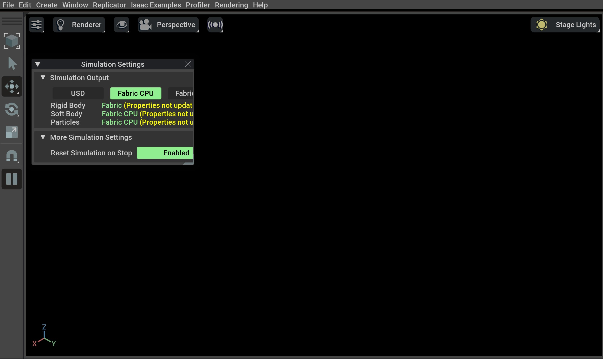
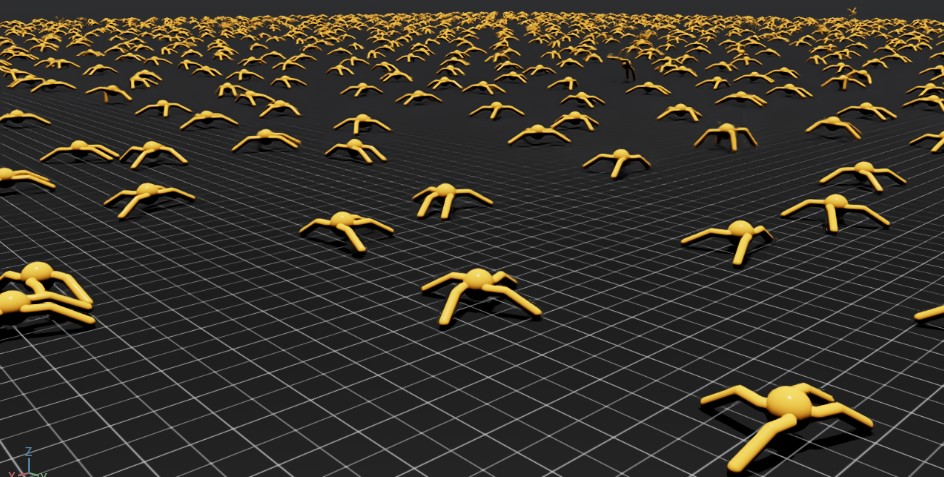

使用Isaac Sim二进制安装#
Isaac Lab 需要 Isaac Sim。 本教程首先从二进制文件安装 Isaac Sim，然后从源代码安装 Isaac Lab。
安装Isaac Sim#
下载预构建的二进制文件#
请按照Isaac Sim documentation 的说明安装最新的Isaac Sim版本。
从 Isaac Sim 4.5 版本开始，Isaac Sim 可执行文件可以直接作为 zip 文件 下载 。
要检查最低系统要求，请参考 这个文档 。
备注
有关驱动程序要求的详细信息，请参阅 Technical Requirements 指南！
在Linux系统上，Isaac Sim目录将被命名为 ${HOME}/isaacsim 。
备注
有关驱动程序要求的详细信息，请参阅 Technical Requirements 指南！
从 Isaac Sim 4.5 版本开始，Isaac Sim 二进制文件可以直接作为 zip 文件下载。以下步骤假设 Isaac Sim 文件夹已解压到 C:/isaacsim 目录。
在Windows系统上，Isaac Sim目录将被命名为 C:/isaacsim 。
验证 Isaac Sim 安装#
为避免每次都要找到并定位 Isaac Sim 安装目录的开销，我们建议为剩下的安装指南将以下环境变量导出到您的终端:
# Isaac Sim root directory
export ISAACSIM_PATH="${HOME}/isaacsim"
# Isaac Sim python executable
export ISAACSIM_PYTHON_EXE="${ISAACSIM_PATH}/python.sh"
:: Isaac Sim root directory
set ISAACSIM_PATH="C:/isaacsim"
:: Isaac Sim python executable
set ISAACSIM_PYTHON_EXE="%ISAACSIM_PATH:"=%\python.bat"
有关常见路径的更多信息，请查看 Isaac Sim 文档 。
检查仿真器是否正常运行:
# note: you can pass the argument "--help" to see all arguments possible. ${ISAACSIM_PATH}/isaac-sim.sh
:: note: you can pass the argument "--help" to see all arguments possible. %ISAACSIM_PATH%\isaac-sim.bat
检查仿真器是否可以从独立的 python 脚本中运行:
# checks that python path is set correctly ${ISAACSIM_PYTHON_EXE} -c "print('Isaac Sim configuration is now complete.')" # checks that Isaac Sim can be launched from python ${ISAACSIM_PYTHON_EXE} ${ISAACSIM_PATH}/standalone_examples/api/isaacsim.core.api/add_cubes.py
:: checks that python path is set correctly %ISAACSIM_PYTHON_EXE% -c "print('Isaac Sim configuration is now complete.')" :: checks that Isaac Sim can be launched from python %ISAACSIM_PYTHON_EXE% %ISAACSIM_PATH%\standalone_examples\api\isaacsim.core.api\add_cubes.py
小心
如果您之前使用过 Isaac Sim 的旧版本，您需要在安装后 第一次 运行以下命令，以删除所有旧用户数据和缓存变量:
${ISAACSIM_PATH}/isaac-sim.sh --reset-user
%ISAACSIM_PATH%\isaac-sim.bat --reset-user
如果按照上述说明仿真器无法运行或崩溃，意味着某些配置不正确。要调试和故障排除，请查看 Isaac Sim 文档 和 论坛 。
安装Isaac Lab#
克隆Isaac Lab#
备注
我们建议制作 fork 以便贡献到该项目，但这并不是使用该框架的必要条件。如果您制作了一个fork，请用你的用户名替换以下的 isaac-sim 。
将Isaac Lab库克隆到你的工作空间:
git clone git@github.com:isaac-sim/IsaacLab.git
git clone https://github.com/isaac-sim/IsaacLab.git
备注
我们提供了一个辅助可执行文件 isaaclab.sh 用来管理扩展:
./isaaclab.sh --help
usage: isaaclab.sh [-h] [-i] [-f] [-p] [-s] [-t] [-o] [-v] [-d] [-n] [-c] -- Utility to manage Isaac Lab.
optional arguments:
-h, --help Display the help content.
-i, --install [LIB] Install the extensions inside Isaac Lab and learning frameworks (rl-games, rsl-rl, sb3, skrl) as extra dependencies. Default is 'all'.
-f, --format Run pre-commit to format the code and check lints.
-p, --python Run the python executable provided by Isaac Sim or virtual environment (if active).
-s, --sim Run the simulator executable (isaac-sim.sh) provided by Isaac Sim.
-t, --test Run all python pytest tests.
-o, --docker Run the docker container helper script (docker/container.sh).
-v, --vscode Generate the VSCode settings file from template.
-d, --docs Build the documentation from source using sphinx.
-n, --new Create a new external project or internal task from template.
-c, --conda [NAME] Create the conda environment for Isaac Lab. Default name is 'env_isaaclab'.
isaaclab.bat --help
usage: isaaclab.bat [-h] [-i] [-f] [-p] [-s] [-v] [-d] [-n] [-c] -- Utility to manage Isaac Lab.
optional arguments:
-h, --help Display the help content.
-i, --install [LIB] Install the extensions inside Isaac Lab and learning frameworks (rl-games, rsl-rl, sb3, skrl) as extra dependencies. Default is 'all'.
-f, --format Run pre-commit to format the code and check lints.
-p, --python Run the python executable provided by Isaac Sim or virtual environment (if active).
-s, --sim Run the simulator executable (isaac-sim.bat) provided by Isaac Sim.
-t, --test Run all python pytest tests.
-v, --vscode Generate the VSCode settings file from template.
-d, --docs Build the documentation from source using sphinx.
-n, --new Create a new external project or internal task from template.
-c, --conda [NAME] Create the conda environment for Isaac Lab. Default name is 'env_isaaclab'.
创建Isaac Sim符号链接#
在已安装的Isaac Sim根目录和Isaac Lab目录的 _isaac_sim 之间建立符号链接。这样做方便了索引Python模块并查找与Isaac Sim一起提供的扩展。
# enter the cloned repository
cd IsaacLab
# create a symbolic link
ln -s path_to_isaac_sim _isaac_sim
# For example: ln -s ${HOME}/isaacsim _isaac_sim
:: enter the cloned repository
cd IsaacLab
:: create a symbolic link - requires launching Command Prompt with Administrator access
mklink /D _isaac_sim path_to_isaac_sim
:: For example: mklink /D _isaac_sim C:/isaacsim
配置conda环境（可选）#
注意
此步骤是可选的。如果您使用Isaac Sim捆绑的Python，可以跳过此步骤。
备注
如果使用 Conda，我们建议使用 Miniconda 。
可执行文件 isaaclab.sh 会自动获取与Isaac Sim捆绑的Python，使用 ./isaaclab.sh -p 命令（除非在虚拟环境中）。这个可执行文件的行为类似于Python可执行文件，可用于运行任何带有仿真器的Python脚本或模块。有关更多信息，请参考 文档 。
要安装 conda ，请按照 这里 的说明操作。您可以使用以下命令创建 Isaac Lab 环境。
# Option 1: Default name for conda environment is 'env_isaaclab'
./isaaclab.sh --conda # or "./isaaclab.sh -c"
# Option 2: Custom name for conda environment
./isaaclab.sh --conda my_env # or "./isaaclab.sh -c my_env"
:: Option 1: Default name for conda environment is 'env_isaaclab'
isaaclab.bat --conda :: or "isaaclab.bat -c"
:: Option 2: Custom name for conda environment
isaaclab.bat --conda my_env :: or "isaaclab.bat -c my_env"
一旦创建，确保在继续之前激活环境！
conda activate env_isaaclab # or "conda activate my_env"
一旦您进入虚拟环境，您就不需要使用 ./isaaclab.sh -p / isaaclab.bat -p 来运行Python脚本。您可以使用环境中的默认Python可执行文件，即通过运行 python 或 python3 。不过，在接下来的文档中，我们将假设您使用 ./isaaclab.sh -p / isaaclab.bat -p 来运行Python脚本。这条命令相当于在您的虚拟环境中运行 python 或 python3 。
安装#
使用
apt来安装依赖（仅适用于Linux）:# these dependency are needed by robomimic which is not available on Windows sudo apt install cmake build-essential
运行安装命令，遍历
source目录中的所有扩展，同时使用带有--editable标志的pip进行安装:
./isaaclab.sh --install # or "./isaaclab.sh -i"
isaaclab.bat --install :: or "isaaclab.bat -i"
备注
上述代码将按默认设置安装所有学习框架。如果您想只安装特定框架，可以将框架的名称作为参数传递。例如，为了只安装 rl_games 框架，您可以运行
./isaaclab.sh --install rl_games # or "./isaaclab.sh -i rl_games"
isaaclab.bat --install rl_games :: or "isaaclab.bat -i rl_games"
有效选项有 rl_games 、 rsl_rl 、 sb3 、 skrl 、 robomimic 、 none 。
验证 Isaac Lab 安装#
要验证安装是否成功，请从存储库顶部运行以下命令:
# Option 1: Using the isaaclab.sh executable
# note: this works for both the bundled python and the virtual environment
./isaaclab.sh -p scripts/tutorials/00_sim/create_empty.py
# Option 2: Using python in your virtual environment
python scripts/tutorials/00_sim/create_empty.py
:: Option 1: Using the isaaclab.bat executable
:: note: this works for both the bundled python and the virtual environment
isaaclab.bat -p scripts\tutorials\00_sim\create_empty.py
:: Option 2: Using python in your virtual environment
python scripts\tutorials\00_sim\create_empty.py
上述命令应该启动仿真器，并显示具有黑色视口的窗口。您可以通过在终端上按 Ctrl+C 来退出脚本。在 Windows 机器上，请使用命令提示符从 Ctrl+Break 或 Ctrl+fn+B 终止进程。

如果您看到这个，那么安装成功了！ 🎉
如果出现错误 ModuleNotFoundError: No module named 'isaacsim' ，请确保conda环境已激活且已执行 source _isaac_sim/setup_conda_env.sh 。
训练一个机器人！#
现在您可以通过强化学习使用 Isaac Lab 来训练机器人！使用预定义的工作流和我们 自带功能 的机器人任务是使用 Isaac Lab 的最快方式。执行以下命令快速训练一只蚂蚁走路！我们建议添加 --headless 以加快训练速度。
./isaaclab.sh -p scripts/reinforcement_learning/rsl_rl/train.py --task=Isaac-Ant-v0 --headless
isaaclab.bat -p scripts/reinforcement_learning/rsl_rl/train.py --task=Isaac-Ant-v0 --headless
… 或者一只机器狗！
./isaaclab.sh -p scripts/reinforcement_learning/rsl_rl/train.py --task=Isaac-Velocity-Rough-Anymal-C-v0 --headless
isaaclab.bat -p scripts/reinforcement_learning/rsl_rl/train.py --task=Isaac-Velocity-Rough-Anymal-C-v0 --headless
Isaac Lab 提供了您需要的工具，以创建您自己所需的 Tasks 和 Workflows ，以满足您的项目需求。请查看我们的 操作指南 指南，如 添加自己的学习库 或 包装环境 以获取详细信息。
